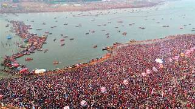

MahaKumbh 13 jan 2025

The Kumbh Mela is not just a festival—it’s a monumental gathering of spirituality, faith, and cultural unity. In 2025,
millions of devotees from around the world will converge at Prayagraj, Uttar Pradesh, to partake in the Maha Kumbh Mela,one of the most significant religious events in Hinduism. This sacred event occurs every 12 years and is rooted in the
ancient mythology of the Samudra Manthan—a cosmic battle between the gods and demons over the nectar of immortality. Spanning from January 14 to February 26, 2025, the Kumbh Mela offers devotees an opportunity to cleanse their sins by
taking a ritual dip at the Triveni Sangam, where the Ganga, Yamuna, and the mythical Saraswati rivers meet. The
celestial alignments during this time are believed to amplify the spiritual energy of the location, making it an
auspicious period for prayer, meditation, and self-purification.
MahaKumbh 14 jan 2025

Beyond its religious significance, Kumbh Mela is also a reflection of India’s rich cultural heritage. The event
showcases a vibrant blend of traditions, including Shahi Snans (Royal Baths), spiritual discourses, yoga sessions, and
devotional music performances, making it a powerful convergence of faith, culture, and community.
Whether you’re a devout pilgrim seeking spiritual enlightenment or a curious traveller eager to witness one of the
largest human gatherings on Earth, Kumbh Mela 2025 promises a transformative experience like no other.